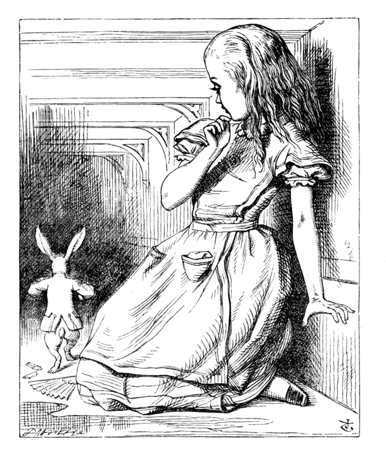

"Curiouser and curiouser!" cried Alice (she was so much surprised that for the moment she quite forgot how to speak good English). "Now I'm opening out like the largest telescope that ever was! Good-bye, feet!"
She looked down, but her feet seemed almost out of sight, they were getting so far off.
"Oh, my poor little feet," she said. "I wonder who will put on your shoes and stockings for you now, dears? I'm sure I shan't be able! I shall be a great deal too far off to trouble myself about you—you must manage the best way you can. But I must be kind to them," she added, "or perhaps they won't walk the way I want to go! Let me see: I'll give them a new pair of boots every Christmas."
She went on planning how she would send presents to her own feet:
Alice's Right Foot, Esq.
Hearthrug,
near The Fender,
(with Alice's love).
Just then her head struck against the roof of the hall—she was now more than nine feet high! She took up the little golden key and hurried off to the garden door. Poor Alice! It was as much as she could do, lying down on one side, to look through into the garden with one eye; to get through was more hopeless than ever. She sat down and began to cry again.
But she went on all the same, shedding gallons of tears until there was a large pool all round her, about four inches deep and reaching halfway down the hall.

After a time she heard a pattering of feet and hastily dried her eyes. It was the White Rabbit returning, splendidly dressed, with a pair of white kid gloves in one hand and a large fan in the other. He came trotting along muttering, "Oh! the Duchess, the Duchess! Oh! won't she be savage if I've kept her waiting!"
Alice felt so desperate she was ready to ask help of anyone. "If you please, sir—" she began timidly. The Rabbit started violently, dropped the gloves and fan, and scurried away into the darkness.
Alice took up the fan and gloves, and as the hall was very hot, she fanned herself. "Dear, dear! How queer everything is to-day! I wonder if I've been changed in the night? Who in the world am I? Ah, that's the great puzzle!"
She began thinking over all the children she knew that were her age, to see if she might have been changed for one of them. "I'm sure I'm not Ada," she said. "Her hair goes in such long ringlets, and mine doesn't. And I'm sure I can't be Mabel, for I know all sorts of things, and she, oh! she knows such a very little! Besides, she's she, and I'm I!"
She tried her lessons. "Four times five is twelve, and four times six is thirteen..." Then she tried geography. "London is the capital of Paris, and Paris is the capital of Rome..." Everything was wrong. "I must have been changed for Mabel!"
She crossed her hands on her lap and began to repeat, but her voice was hoarse and strange, and the words came out wrong:
"How doth the little crocodile
Improve his shining tail,
And pour the waters of the Nile
On every golden scale!"
"How cheerfully he seems to grin,
How neatly spread his claws,
And welcome little fishes in
With gently smiling jaws!"
"I'm sure those are not the right words," said Alice sadly. "I must be Mabel after all!"
As she said this she looked down and saw she had put on one of the Rabbit's white kid gloves. "How can I have done that? I must be growing small again." She measured herself by the table—about two feet high—and realized the fan was causing it. She dropped it hastily, just in time to avoid disappearing altogether.
"That was a narrow escape!" said Alice. "And now for the garden!"
She ran with all speed back to the little door—but it was shut again, and the golden key lay on the glass table as before. "Things are worse than ever," thought the poor child. "For I never was so small as this before, never!"
Her foot slipped—splash!—and she was up to her chin in salt water. Her first idea was that she had fallen into the sea, but she soon realized she was swimming in the pool of tears she had wept when she was nine feet high.
"I wish I hadn't cried so much!" she said, swimming about. "I shall be punished by being drowned in my own tears!"
Just then she noticed something splashing nearby—it was only a Mouse that had slipped in like herself. "O Mouse, do you know the way out of this pool? I am very tired of swimming about here!"
The Mouse looked at her inquisitively but said nothing. "Perhaps it doesn't understand English," thought Alice. "I daresay it's a French mouse, come over with William the Conqueror." So she tried again: "Ou est ma chatte?"
The Mouse gave a sudden leap and quivered all over. "Oh, I beg your pardon!" cried Alice hastily. "I quite forgot you didn't like cats."
"Well, perhaps not," said Alice, "but I wish I could show you our cat Dinah—she's such a dear quiet thing!" The Mouse bristled all over, clearly offended. "We won't talk about her any more if you'd rather not."
"We indeed!" cried the Mouse. "As if I would talk on such a subject! Our family always hated cats—nasty, low, vulgar things!"
"I won't indeed!" said Alice, trying to change the subject. "Are you fond of dogs?"
The Mouse said nothing, so Alice went on eagerly. "There is such a nice little dog near our house! A bright-eyed terrier with such long curly brown hair! It fetches things when you throw them, and sits up and begs for dinner. It belongs to a farmer and he says it's worth a hundred pounds—it kills all the rats and—oh dear!"
The Mouse was swimming away from her as fast as it could, making quite a commotion in the pool. "Mouse dear! Do come back again! We won't talk about cats or dogs either, if you don't like them!"
When the Mouse heard this, it turned and swam slowly back. "Let us get to the shore," it said trembling, "and then I'll tell you my history, and you'll understand why I hate cats and dogs."
It was high time to go, for the pool was getting crowded with the creatures that had fallen in: a Duck, a Dodo, a Lory, an Eaglet, and several others. Alice led the way, and the whole party swam to the shore.